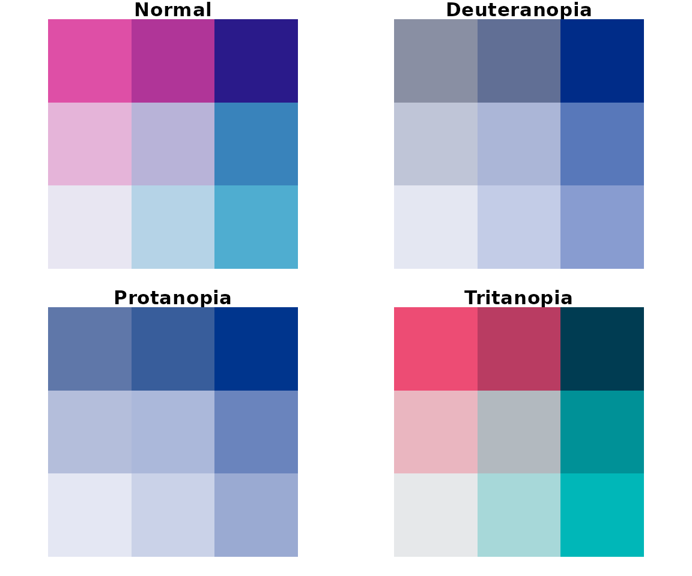
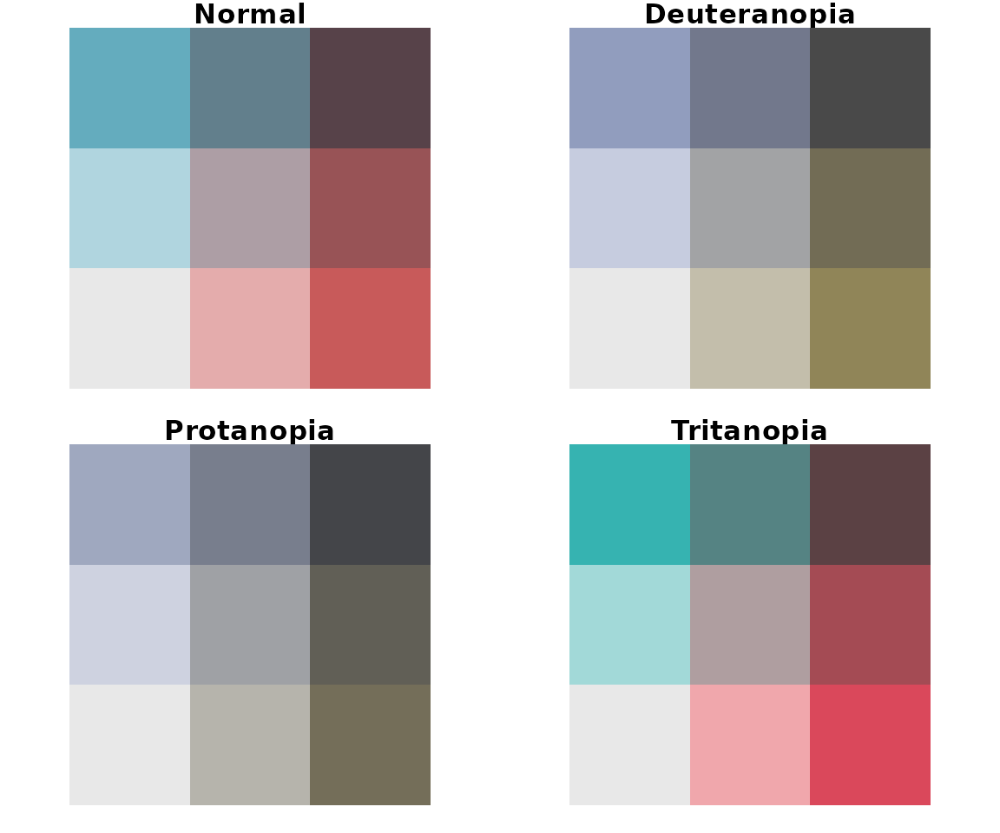
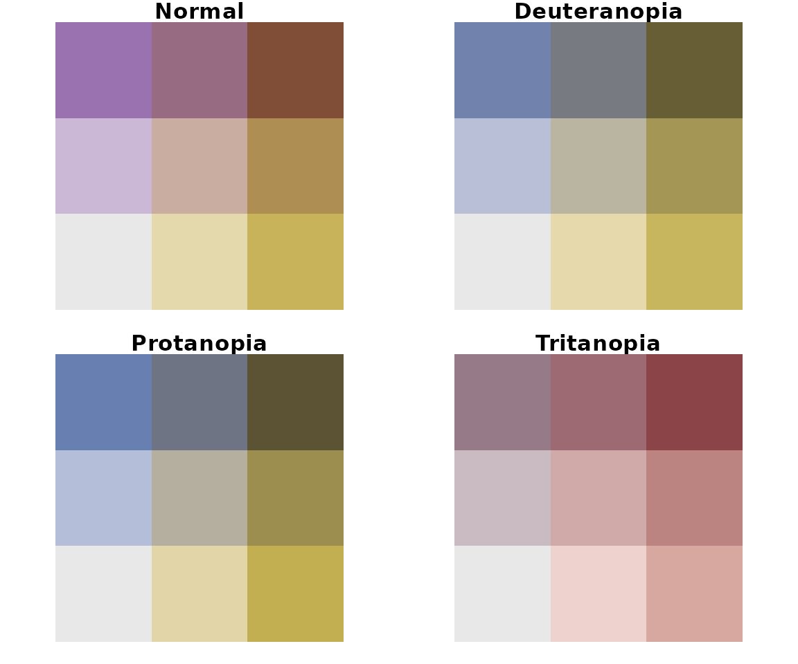

Checking bivariate palettes for colorblind friendliness
Jakub Nowosad
2024-08-30
Source:vignettes/articles/check_bivariate_pals.Rmd
check_bivariate_pals.Rmd
library(colorblindcheck)
library(pals)
bivcol = function(pal, nx = 3, ny = 3){
tit = substitute(pal)
if (is.function(pal))
pal = pal()
ncol = length(pal)
if (missing(nx))
nx = sqrt(ncol)
if (missing(ny))
ny = nx
image(matrix(1:ncol, nrow = ny), axes = FALSE, col = pal, asp = 1)
mtext(tit)
}
par(mfrow = c(3, 4), mar = c(1, 1, 2, 1))
bivcol(arc.bluepink)
bivcol(brewer.divdiv)
bivcol(brewer.divseq)
bivcol(brewer.qualseq)
bivcol(brewer.seqseq1)
bivcol(brewer.seqseq2)
bivcol(census.blueyellow)
bivcol(stevens.bluered)
bivcol(stevens.greenblue)
bivcol(stevens.pinkblue)
bivcol(stevens.pinkgreen)
bivcol(stevens.purplegold)arc.bluepink
colorblindcheck::palette_check(arc.bluepink(), plot = TRUE, bivariate = TRUE)#> name n tolerance ncp ndcp min_dist mean_dist max_dist
#> 1 normal 16 7.135562 120 120 7.1355623 27.72463 53.76783
#> 2 deuteranopia 16 7.135562 120 99 0.3648051 19.64988 50.09252
#> 3 protanopia 16 7.135562 120 95 0.5934073 19.58975 46.04090
#> 4 tritanopia 16 7.135562 120 118 6.1471867 30.58057 72.03219brewer.divdiv
colorblindcheck::palette_check(brewer.divdiv(), plot = TRUE, bivariate = TRUE)#> name n tolerance ncp ndcp min_dist mean_dist max_dist
#> 1 normal 9 16.97102 36 36 16.971022 42.56758 82.75525
#> 2 deuteranopia 9 16.97102 36 30 5.067789 30.46320 65.57001
#> 3 protanopia 9 16.97102 36 30 7.042854 32.71365 65.71263
#> 4 tritanopia 9 16.97102 36 31 7.095207 36.41785 65.82211brewer.divseq
colorblindcheck::palette_check(brewer.divseq(), plot = TRUE, bivariate = TRUE)#> name n tolerance ncp ndcp min_dist mean_dist max_dist
#> 1 normal 9 9.237516 36 36 9.237516 38.32933 87.90123
#> 2 deuteranopia 9 9.237516 36 36 9.237516 37.40017 89.41009
#> 3 protanopia 9 9.237516 36 36 9.237516 38.56532 83.88314
#> 4 tritanopia 9 9.237516 36 34 5.912858 33.38318 77.49865brewer.qualseq
colorblindcheck::palette_check(brewer.qualseq(), plot = TRUE, bivariate = TRUE)#> name n tolerance ncp ndcp min_dist mean_dist max_dist
#> 1 normal 9 14.93833 36 36 14.938334 42.05184 79.63286
#> 2 deuteranopia 9 14.93833 36 28 4.858979 27.76300 56.59805
#> 3 protanopia 9 14.93833 36 30 6.708243 30.46437 53.17718
#> 4 tritanopia 9 14.93833 36 33 3.942693 37.66875 64.33504brewer.seqseq1
colorblindcheck::palette_check(brewer.seqseq1(), plot = TRUE, bivariate = TRUE)
#> name n tolerance ncp ndcp min_dist mean_dist max_dist
#> 1 normal 9 12.48476 36 36 12.484763 34.39167 70.52906
#> 2 deuteranopia 9 12.48476 36 27 3.584833 23.58200 66.74934
#> 3 protanopia 9 12.48476 36 26 2.357097 24.01347 62.78648
#> 4 tritanopia 9 12.48476 36 33 11.759762 38.99925 71.65934brewer.seqseq2
colorblindcheck::palette_check(brewer.seqseq2(), plot = TRUE, bivariate = TRUE)
#> name n tolerance ncp ndcp min_dist mean_dist max_dist
#> 1 normal 9 13.21133 36 36 13.21133 39.99288 94.5981
#> 2 deuteranopia 9 13.21133 36 34 11.21547 39.78176 94.5981
#> 3 protanopia 9 13.21133 36 34 10.70449 38.68412 94.5981
#> 4 tritanopia 9 13.21133 36 35 12.20966 39.86703 94.5981census.blueyellow
colorblindcheck::palette_check(census.blueyellow(), plot = TRUE, bivariate = TRUE)#> name n tolerance ncp ndcp min_dist mean_dist max_dist
#> 1 normal 9 6.669521 36 36 6.669521 29.31884 68.67608
#> 2 deuteranopia 9 6.669521 36 34 3.377298 27.64322 66.25251
#> 3 protanopia 9 6.669521 36 35 3.023168 26.10517 60.00471
#> 4 tritanopia 9 6.669521 36 35 5.396144 23.28601 46.33222stevens.bluered
colorblindcheck::palette_check(stevens.bluered(), plot = TRUE, bivariate = TRUE)
#> name n tolerance ncp ndcp min_dist mean_dist max_dist
#> 1 normal 9 10.93275 36 36 10.932747 32.73816 56.19377
#> 2 deuteranopia 9 10.93275 36 35 10.561421 25.43956 52.51736
#> 3 protanopia 9 10.93275 36 32 7.652898 24.31248 54.67234
#> 4 tritanopia 9 10.93275 36 35 10.861179 36.01006 61.83824stevens.greenblue
colorblindcheck::palette_check(stevens.greenblue(), plot = TRUE, bivariate = TRUE)#> name n tolerance ncp ndcp min_dist mean_dist max_dist
#> 1 normal 9 9.29651 36 36 9.296510 26.34666 50.19184
#> 2 deuteranopia 9 9.29651 36 33 7.245191 24.30123 49.30228
#> 3 protanopia 9 9.29651 36 35 7.702681 24.31445 46.14009
#> 4 tritanopia 9 9.29651 36 29 6.057564 20.34418 51.34639stevens.pinkblue
colorblindcheck::palette_check(stevens.pinkblue(), plot = TRUE, bivariate = TRUE)#> name n tolerance ncp ndcp min_dist mean_dist max_dist
#> 1 normal 9 10.87893 36 36 10.878926 30.75955 54.56011
#> 2 deuteranopia 9 10.87893 36 26 3.778188 20.83687 55.71269
#> 3 protanopia 9 10.87893 36 26 3.232687 21.71195 52.06754
#> 4 tritanopia 9 10.87893 36 36 10.880404 35.54375 67.25533stevens.pinkgreen
colorblindcheck::palette_check(stevens.pinkgreen(), plot = TRUE, bivariate = TRUE)#> name n tolerance ncp ndcp min_dist mean_dist max_dist
#> 1 normal 9 8.367352 36 36 8.367352 27.08876 56.88416
#> 2 deuteranopia 9 8.367352 36 30 1.276375 15.80572 33.62710
#> 3 protanopia 9 8.367352 36 31 2.254391 18.27315 36.19185
#> 4 tritanopia 9 8.367352 36 33 5.602960 27.12226 50.82910stevens.purplegold
colorblindcheck::palette_check(stevens.purplegold(), plot = TRUE, bivariate = TRUE)
#> name n tolerance ncp ndcp min_dist mean_dist max_dist
#> 1 normal 9 11.97625 36 36 11.976253 30.13646 53.56032
#> 2 deuteranopia 9 11.97625 36 34 10.169263 27.11770 45.73965
#> 3 protanopia 9 11.97625 36 34 11.217796 28.98069 49.34292
#> 4 tritanopia 9 11.97625 36 24 4.024065 20.65332 49.63636